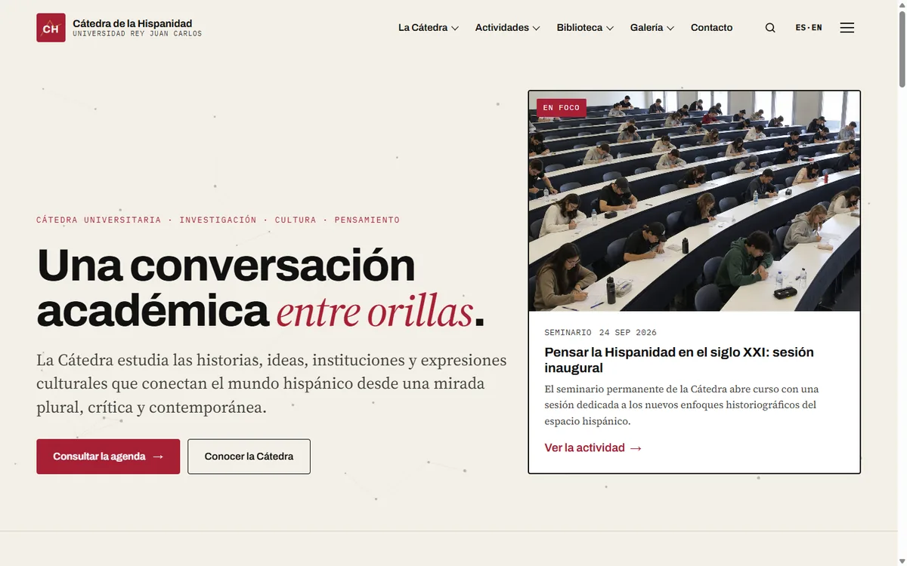
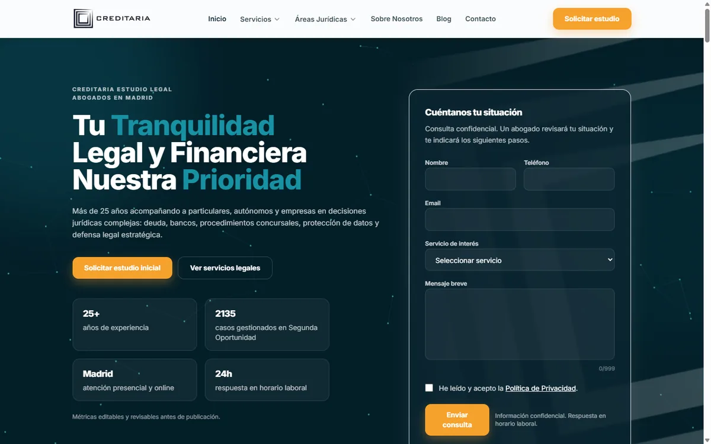
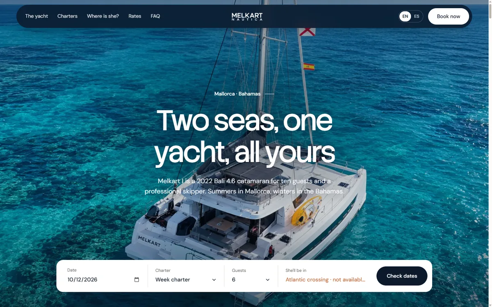
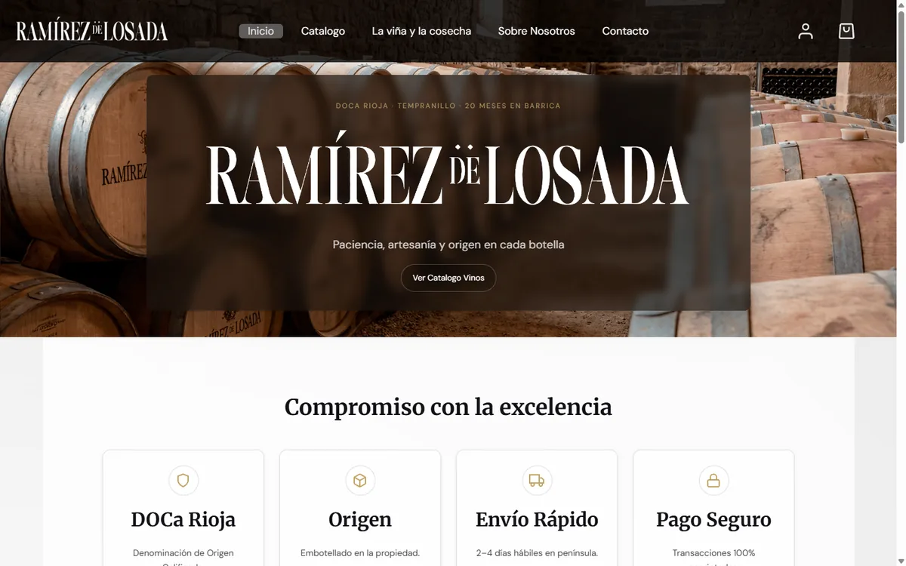
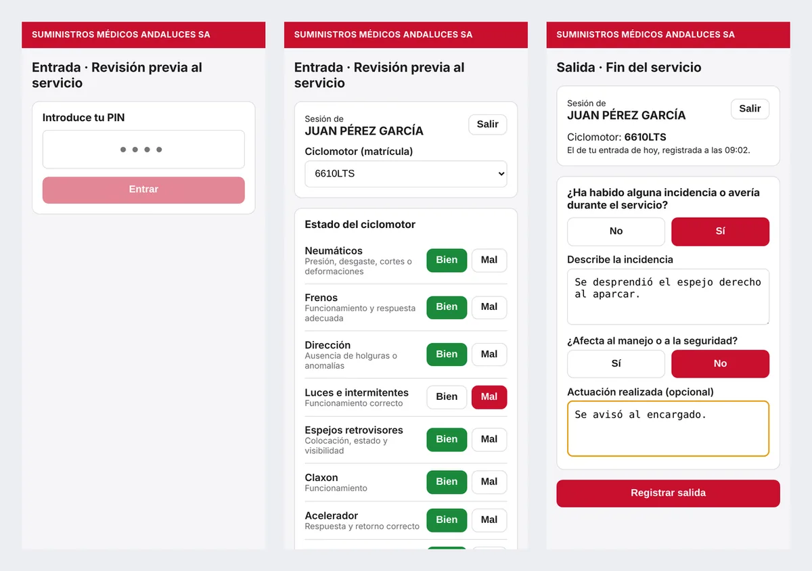
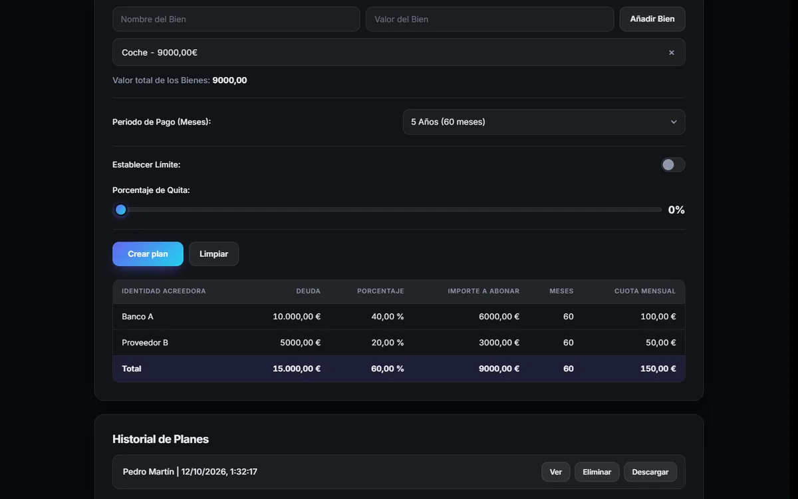
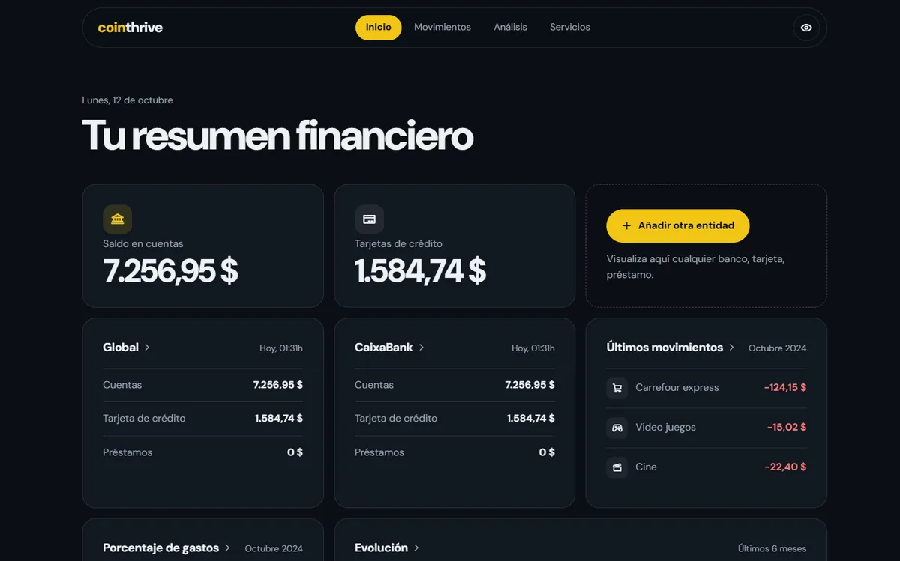
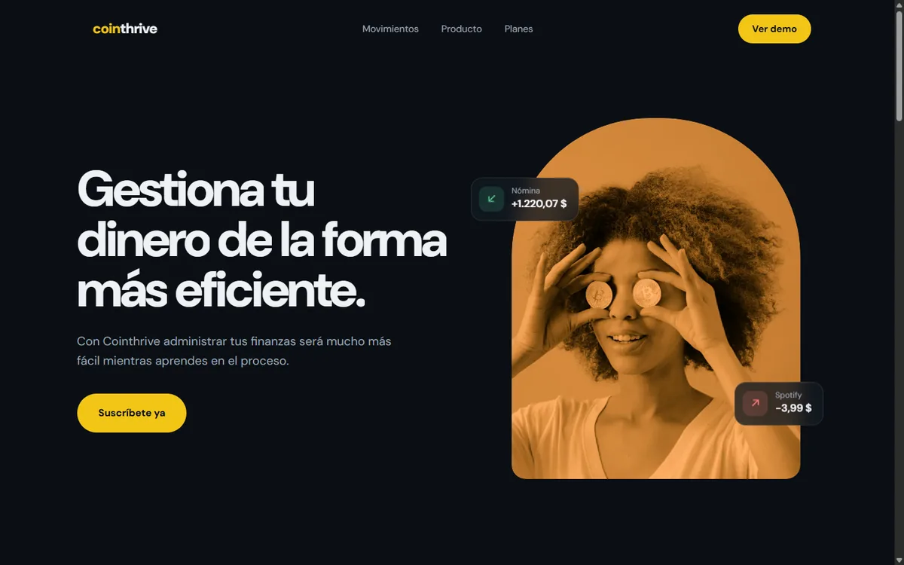
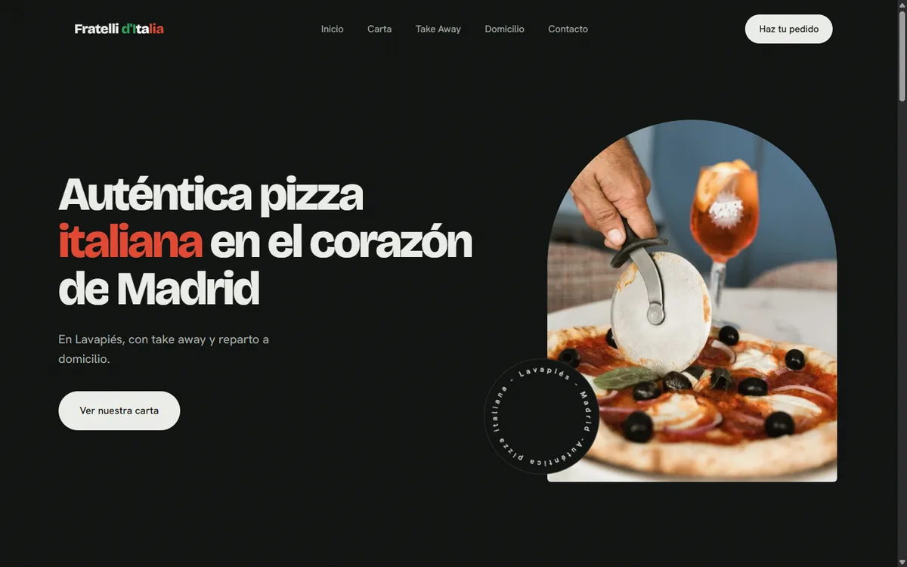

Cátedra de la Hispanidad
Sitio y plataforma de la cátedra de la Universidad Rey Juan Carlos: actividades, biblioteca y galería, con cuentas de usuario y pagos.
Creo webs, aplicaciones y sistemas hechos para funcionar de verdad, y automatizo lo que se repite.
Jose FigueiraFrontend, Odoo y automatización · Madrid
Webs de clientes y proyectos propios. Cada captura es del sitio real, publicado.

Sitio y plataforma de la cátedra de la Universidad Rey Juan Carlos: actividades, biblioteca y galería, con cuentas de usuario y pagos.

Web corporativa de un despacho de abogados en Madrid, con un editor de artículos a medida para que el equipo publique y planifique el blog.

Charter de catamarán en Mallorca y Bahamas: web bilingüe con consulta de fechas, reserva y pago online.

Tienda online de vinos DOCa Rioja con verificación de edad, catálogo, cuenta de cliente y carrito.
Módulos y temas propios para Odoo 16 y 19, e integraciones externas por XML-RPC, para despachos y empresas.

Gestión de restaurante con arquitectura de microservicios: pedidos, cocina e inventario comunicados por mensajería.




Simulador cooperativo de supermercado y farmacia en un cráter de la Luna, con mundo procedural y física de personaje.
Flujos con n8n y Make, integraciones por API y aplicaciones con IA generativa para eliminar tareas repetitivas.
Plataforma corporativa de un despacho especializado en Segunda Oportunidad, orientada a captar consultas.
Todo lo que uso, con el proyecto donde lo he usado. 42 tecnologías en 7 áreas.
Datos de mis 23 repositorios a 12 de octubre de 2026. Mide cantidad de código, no nivel; el HTML incluye una exportación estática grande.
Interfaces que se sienten simples
Lo que hay detrás de la pantalla
Sistemas del negocio
Menos tareas, más tiempo
Que funcione y siga funcionando
Mundos con reglas propias
La estética y la utilidad son lo mismo
Entender el contexto, ordenar lo complejo y convertirlo en algo útil. Así abordo cada proyecto.
Creditaria y Exoneris
Dos planos que se complementan: la experiencia pública que presenta los servicios y la operativa interna que sostiene el día a día del despacho.
Melkart y Ramírez de Losada
Webs que transmiten un producto y dejan al usuario dar el siguiente paso con claridad: reservar un barco o comprar una botella.
CATEDRA, Domi-QR e Hideaway
Aplicaciones con datos, usuarios y reglas: desde un checklist diario hasta una plataforma con cuentas, pagos y panel editorial.
n8n, Make, IA y Unity
Dos formas de construir sistemas con reglas: flujos que ahorran tareas repetitivas y un videojuego cooperativo con su propio mundo.
Describe especializaciones y proyectos, no una cronología laboral.
Me muevo entre el frontend, los sistemas empresariales y la integración de herramientas. Desde una web corporativa hasta un CRM a medida, busco que la tecnología tenga sentido dentro del negocio y que cada pantalla sea clara para quien la usa.
Una web, una plataforma o una forma más inteligente de trabajar. Cuéntame qué tienes en mente.
figueira205@proton.me
Una cátedra universitaria necesita mostrar su actividad (seminarios, biblioteca, galería, agenda) y también gestionar personas: profesores y editores que publican, y usuarios que se registran o pagan.
Django 5.2 LTS con Wagtail como CMS para profesores y editores. Registro y acceso con verificación de correo y doble factor (django-allauth), contraseñas con Argon2 y cabecera de seguridad CSP.
Cobros con Stripe Checkout y webhooks, base de datos PostgreSQL y despliegue en contenedores con Docker y Gunicorn.
Interfaz bilingüe (ES/EN) de tono editorial, con navegación por secciones, buscador y agenda. La vista publicada es la parte estática del sitio.
Presentar áreas jurídicas como Segunda Oportunidad, dación en pago, concurso de acreedores o ejecución hipotecaria con una estructura que ayude a encontrar el servicio y solicitar una consulta.
Organización de servicios, contenido del equipo y vías de contacto en un recorrido claro, con formulario de consulta visible desde la portada.
Un editor de artículos a medida (React con TipTap y una API en Express) que permite redactar con formato profesional y planificar las publicaciones del blog.
La web se apoya en un tema y un módulo propios de Odoo (theme_creditaria y creditaria_web) conectados con la operativa del despacho.
Diseño y desarrollo de la web, del tema, del módulo y del sistema de contenidos.
Traducir la propuesta de una experiencia náutica al entorno digital: conocer el barco, situarse en el destino y avanzar hacia la contratación.
Buscador de disponibilidad (fecha, tipo de charter y huéspedes) que organiza los pasos para contratar el alquiler.
La posibilidad de pagar online se integra en la propuesta del sitio, conectando la selección del servicio con la contratación.
Desarrollo de la web bilingüe y del sistema de agendado, reserva y pago online, con atención a la organización de la información.
Una bodega que vende vino necesita un catálogo claro, una compra sencilla y cumplir con la verificación de edad.
Desarrollo web con atención a la presentación del producto, la legibilidad y la navegación entre dispositivos.
Catálogo, cuenta de cliente, carrito y pago con tarjeta sobre WooCommerce, con métodos de pago de carteras digitales en revisión continua.
Diseño del tema, configuración de la tienda y diagnóstico de los flujos de pago.
Un despacho necesita que su sistema de gestión refleje los procesos con los que trabaja. La personalización permite ajustar Odoo a la operativa real.
Módulos de gestión (despacho, firmadas, registro_productividad), el módulo web y el tema de Creditaria, y una instalación de Odoo 16 reproducible con Docker Compose.
Un servicio Node con Express que se conecta a Odoo por XML-RPC para automatizar intercambios con otras herramientas.
Dar una estructura comprensible al trabajo interno y mantener la gestión de la información en el centro.
Un servicio de reparto debe comprobar cada día el estado de sus ciclomotores y dejar constancia de quién los usa.
Cada trabajador entra con su PIN, registra la entrada con el checklist (neumáticos, frenos, luces, claxon…) y la salida con incidencias. Todo queda en base de datos.
Genera el registro del mes en PDF desde el propio navegador.
Vue 3 y Vite en el cliente, Supabase (PostgreSQL) como base de datos y despliegue automático con GitHub Actions.
Un restaurante necesita coordinar pedidos, cocina y despensa sin que un fallo en una parte detenga el resto.
Un frontend en React y TypeScript, un servicio de cocina y un servicio de despensa en Node y Express, comunicados de forma asíncrona con RabbitMQ y con PostgreSQL como persistencia.
Todo el sistema arranca con Docker Compose.
Los despachos preparan propuestas de pago con parámetros habituales (bienes, periodo, cuota máxima) para presentarlas ante un juez.
Reparte el valor de los bienes entre los acreedores de forma proporcional, aplica quita y límite mensual, y suma la hipoteca a la cuota.
Historial de planes, ventana de detalle, exportación a PDF, guía de preguntas frecuentes y tema claro u oscuro.
JavaScript sin framework, con html2canvas y jsPDF para el documento.
En una sola pantalla hay que entender cuánto se tiene, en qué se gasta y cómo evoluciona.
Saldos, tarjetas, últimos movimientos, anillo de gasto del mes y barras de ingresos frente a gastos. Botón para ocultar saldos en público.
JavaScript sin dependencias de gráficos: anillo en SVG y barras en CSS. Datos de demostración.
Un producto financiero debe explicar su valor rápido y llevar a la suscripción.
Portada con propuesta de valor, ejemplo de movimientos, cuatro ventajas y planes anual, mensual y único con precios animados.
HTML, CSS y JavaScript con animaciones de entrada, adaptación a móvil y respeto de la preferencia de movimiento reducido.
Una pizzería de barrio necesita que se la encuentre, se vea la carta y se pueda pedir con un toque.
Portada con foto principal, carta tipográfica, servicios de take away y domicilio, galería y contacto con mapa.
HTML, CSS y JavaScript sin framework, con datos estructurados de restaurante y animaciones guiadas por el scroll.
Un equipo regenta una tienda-farmacia en la Luna: atiende a clientes, repone estanterías, fija precios, amplía el local y elabora fármacos con riesgo.
Tienda jugable con cajas TPV funcionales, clientes que compran según el precio, mundo lunar esférico generado por semilla, locomoción física con ragdoll, interfaz con UI Toolkit y ordenador funcional dentro del juego.
Unity 6 con C# para el juego, scripts de Python en Blender para generar y riggear los modelos, y un flujo de generación 3D con IA.
En desarrollo en equipo; el repositorio es privado.
Conectar herramientas y ordenar tareas repetitivas mediante flujos automatizados que respondan a necesidades del negocio.
Un flujo de n8n que automatiza la preparación de una demanda genérica en España, y Figsoft, una aplicación Angular que usa la API de Gemini.
Entender primero la tarea y sus puntos de fricción para decidir qué automatizar y cómo organizar el recorrido de la información.
Presentar un servicio jurídico especializado exige claridad en la información y un recorrido comprensible para quien valora pedir ayuda.
Diseño UX/UI con atención a la jerarquía del contenido, la orientación del usuario y las vías de contacto.
Integrar diseño, captación de consultas y SEO sin perder de vista la especialización del despacho.